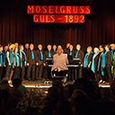
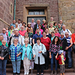
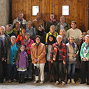
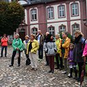
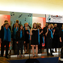
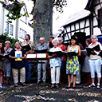
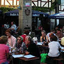

<!DOCTYPE html PUBLIC "-//W3C//DTD XHTML 1.0 Transitional//EN" "http://www.w3.org/TR/xhtml1/DTD/xhtml1-transitional.dtd">
<html xmlns="http://www.w3.org/1999/xhtml">
<head>
    <title>Gesangverein Cäcilia Eintracht Erpel 1844</title>
    <link href="styles/reset.css" rel="stylesheet" type="text/css" />
    <link href="styles/clearfix.css" rel="stylesheet" type="text/css" />
    <link href="styles/stylesheet.css" rel="stylesheet" type="text/css" />
    <meta http-equiv="content-type" content="text/html; charset=utf-8" />
    <link href='https://fonts.googleapis.com/css?family=Open+Sans' rel='stylesheet' type='text/css' />
	<link href='https://fonts.googleapis.com/css?family=Noto+Serif:400' rel='stylesheet' type='text/css'>
	<script type="text/javascript" src="javascript/jquery-1.11.0.min.js"></script>
	<script type="text/javascript" src="javascript/functions.js"></script>
</head>
<body>
<div class="big-container">
	<div class="header clearfix">
		<ul class="navigation clearfix">
			<li class="navigation-item "><a href="ueber-uns.html">Der Chor</a>
				<ul>
					<li class="" ><a href="chorleiter.html">Chorleiter</a></li>
				</ul>
			</li>
			<li class="navigation-item active"><a href="medien.html">Medien</a></li>
		</ul>
			<a href="index.html"></a>
		<ul class="navigation clearfix">
			<li class="navigation-item "><a href="aktuelles.html">Aktuelles</a></li>
			<li class="navigation-item "><a href="kontakt.html">Kontakt</a></li>
		</ul> 
	</div>
	<div class="small-container"> 

 
	<div class="content">
<div class="media">			

<object type="application/x-shockwave-flash" data="music.swf" width="400" height="200" style="border:1px solid #840404; padding:1px;">
    <param name="movie" value="music.swf" />
    <param name="bgcolor" value="#ffffff" />
    <param name="FlashVars" value="mp3=music/Lass die Sonne.mp3|music/beg steal.mp3|music/Theater.mp3|music/Joyful Joyful.mp3|music/bruecke.mp3|music/waterloo.mp3|music/top.mp3|music/New_York.mp3&amp;title=Lass die Sonne in dein Herz|Beg, steal or borrow|Theater|Joyful, Joyful|Ein Lied kann eine Brücke sein|Waterloo|Top of the world|Ich war noch niemals in New York&amp;width=300&amp;height=200&amp;showvolume=1&amp;buttonwidth=25&amp;volumeheight=7&amp;loadingcolor=c01aff&amp;bgcolor=ffffff&amp;bgcolor1=ffffff&amp;bgcolor2=ffffff&amp;slidercolor1=840404&amp;slidercolor2=840404&amp;sliderovercolor=840404&amp;buttoncolor=840404&amp;buttonovercolor=840404&amp;playlistcolor=ffffff&amp;playlistalpha=25&amp;currentmp3color=000000&amp;scrollbarovercolor=840404&amp;textcolor=840404" />
</object>


<!--Javascript- Teil wird erzeugt. Die erzeugten Javascript arrays werden Variablen zugewiesen.-->
<script type="text/javascript">
    var files = ["Freundschaft","Ausflug_Lahrbach2","AusflugRommersdorf","Rommersdorf","Konzert2014","OffenesSingen","Weihnachtsfeier2015","Kusber_2015","OffenesSingen2016"];
    var hochkant = ["Kusber_2015"];
    var alt = {"Freundschaft":"Freundschaftssingen in Güls","Ausflug_Lahrbach2":"Ausflug nach Lahrbach","AusflugRommersdorf":"Ausflug in die Abtei Rommersdorf","Konzert2014":"Konzert im Jahr 2014","OffenesSingen":"Offenes Singen in Erpel","Weihnachtsfeier2015":"Weinachtsfeier 2015","Kusber_2015":"Herr Kusber gibt die T\u00f6ne an","Rommersdorf":"Ausflug in die Abtei Rommersdorf","OffenesSingen2016":"Offenes Singen am 08. Juli 2016 in Erpel"};
    
    //$(files).each(function () {
        //$("").attr('src', "image/gallery/"+this+".jpg");
    //});
</script>

<div class="gallery">
  <table border="0" width="100%" cellspacing="20">
    <colgroup width="20%" span="5"></colgroup>
    <!--Alle Bilder werden von dem oberen array ausgegeben. Nach 5 Bildern wird ein Zeilenumbruch erzeugt.-->
        <!--Es wird überprüft, ob ein Bild einem Text zugewieden wurde.-->
    <tr valign="middle" align="center">
	       <!--Link zu der Javascript Datei wird ausgegeben.-->
      <td style="padding-bottom:15px;">
        <a href="javascript:show(0)">
        </a>
    </td>
          <!--Link zu der Javascript Datei wird ausgegeben.-->
      <td style="padding-bottom:15px;">
        <a href="javascript:show(1)">
        </a>
    </td>
            <!--Link zu der Javascript Datei wird ausgegeben.-->
      <td style="padding-bottom:15px;">
        <a href="javascript:show(2)">
        </a>
    </td>
            <!--Link zu der Javascript Datei wird ausgegeben.-->
      <td style="padding-bottom:15px;">
        <a href="javascript:show(3)">
        </a>
    </td>
            <!--Link zu der Javascript Datei wird ausgegeben.-->
      <td style="padding-bottom:15px;">
        <a href="javascript:show(4)">
        </a>
    </td>
            <!--Link zu der Javascript Datei wird ausgegeben.-->
      <td style="padding-bottom:15px;">
        <a href="javascript:show(5)">
        </a>
    </td>
      </tr>    <!--Es wird überprüft, ob ein Bild einem Text zugewieden wurde.-->
    <tr valign="middle" align="center">
          <!--Link zu der Javascript Datei wird ausgegeben.-->
      <td style="padding-bottom:15px;">
        <a href="javascript:show(6)">
        </a>
    </td>
            <!--Link zu der Javascript Datei wird ausgegeben.-->
      <td style="padding-bottom:15px;">
        <a href="javascript:show(7)">
        </a>
    </td>
            <!--Link zu der Javascript Datei wird ausgegeben.-->
      <td style="padding-bottom:15px;">
        <a href="javascript:show(8)">
        </a>
    </td>
          </tr>
  </table>
			</div>
			</div>			
		</div>
	</div>
		<div class="footer">
			<ul class="information clearfix">
				<li class="information-item"><h4>Probenzeit:</h4>
											Dienstag, 20:00- 21:30 Uhr	
				</li>
				<li class="information-item"><h4>Probenort:</h4>
											Bürgersaal Erpel <br/>
											Heisterer Straße 29 <br/>
											53579 Erpel
				</li>
				<li class="information-item"><h4>Ansprechpartner:</h4>
											        Armin Ruckelshauß
				</li>
				
			</ul>
			
			<div class="impressum">
				<a href="impressum.html">Impressum</a>
			</div>
			<div class="impressum">
				<a href="datenschutz.html">Datenschutz</a>
			</div>
		</div>
	</div>	
</div>

</body>
</html>
